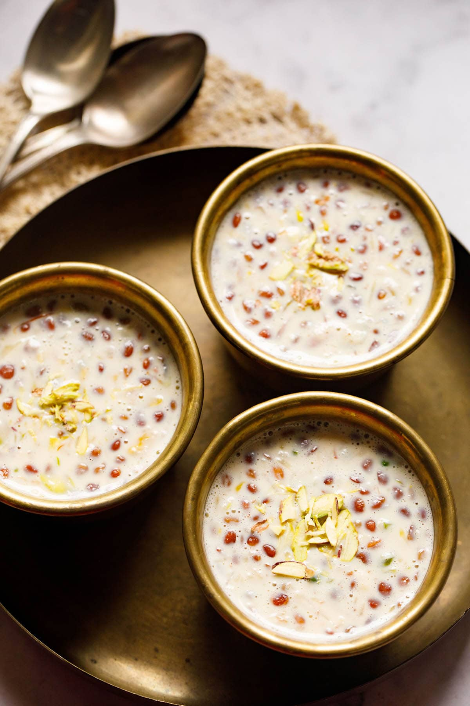

Festivals in Pune aren't complete without delicious traditional dishes! From the sweetness of Modaks during Ganesh Chaturthi to spicy Puran Poli on Holi, discover the authentic flavors that light up the festive spirit.

Puran Poli
Sweet flatbread stuffed with chana dal and jaggery
📍 Tilak Road

Shrikhand
Thick hung curd flavored with saffron and cardamom
📍 Kothrud

Ukadiche Modak
Steamed rice flour modak with coconut-jaggery filling
📍 Dagdusheth Area

Karanji
Crescent-shaped sweet dumplings with coconut filling
📍 Tilak Road

Shirvya
Sweet vermicelli pudding made during Eid
📍 Kondhwa

Basundi
Thickened sweetened milk with nuts and cardamom
📍 FC Road

Ghavne
Sweet rice pancakes made during Nag Panchami
📍 Peth Areas
🙏 Modaks are considered Lord Ganesha's favorite sweet.
🌸 Puran Poli is often made with homemade ghee during Holi celebrations.
🧁 Shrikhand is a classic Maharashtrian dessert often paired with Pooris.
🌙 Sabudana Khichdi is a staple during fasting days and Navratri.
🪔 Diwali celebrations in Pune feature elaborate sweet platters.
🕌 Shirvya is traditionally prepared during Eid celebrations.
🥛 Basundi is often served in clay pots for better flavor.
🐍 Ghavne are made in snake shapes during Nag Panchami.
"Dagdusheth's Modaks are the soul of Pune's Ganpati festival!" – Priya N.
"Mom's Puran Poli is a Holi tradition we never skip." – Rajesh K.
"The Shrikhand from Kothrud sweet shops is divine!" – Anjali P.
"Basundi on FC Road tastes like childhood memories." – Rahul M.